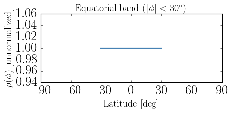
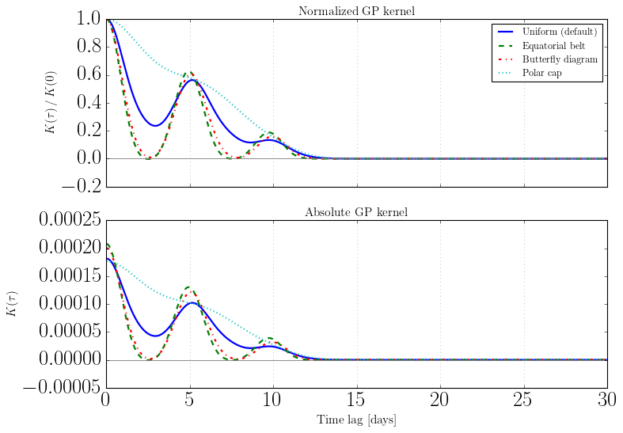
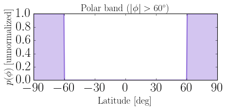
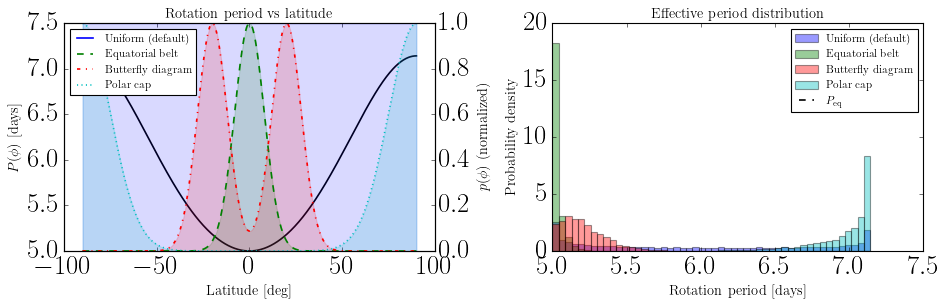
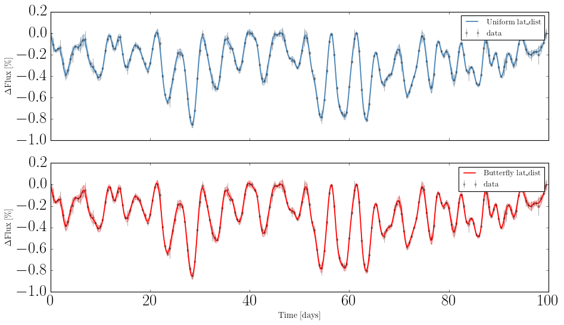

Custom Latitude Distributions¶
The GP kernel is an average of single-latitude contributions weighted by how spots are distributed across the stellar surface:
where \(p(\phi)\) is the latitude probability density and \(\phi \in [-\pi/2, \pi/2]\) (south pole to north pole).
By default the distribution is uniform — spots can emerge anywhere. Real stars, however, concentrate spot activity at preferred latitudes:
Star type |
Typical spot distribution |
|---|---|
Sun-like |
Two activity bands ±15–30° (butterfly diagram) |
Young active |
Polar caps above ±60° |
Equatorial |
Belt around ±10° |
The lat_dist parameter of kernel(), kernel_solid_body(), and compute_psd() accepts any callable p(phi) -> float to encode these priors. This notebook shows how to define and use several common distributions.
[1]:
import sys
sys.path.append("../..")
import numpy as np
import matplotlib.pyplot as plt
from matplotlib.gridspec import GridSpec
from src_numpy.analytic_kernel import AnalyticKernel
2. Define latitude distributions¶
Each distribution is a plain Python function of latitude \(\phi\) in radians. It does not need to be normalized — the kernel automatically normalizes by \(\int p(\phi)\,d\phi\).
[4]:
# --- 1. Uniform (default behavior) -------------------------------------------
def uniform(phi):
"""Spots uniformly distributed across all latitudes."""
return 1.0
# --- 2. Equatorial belt ----------------------------------------------------------
def equatorial_belt(phi, phi0=np.deg2rad(10), sigma=np.deg2rad(8)):
"""Spots concentrated in a single belt around the equator."""
return np.exp(-phi**2 / (2 * sigma**2))
# --- 3. Butterfly diagram (two symmetric activity bands) -----------------------
def butterfly(phi, phi0=np.deg2rad(20), sigma=np.deg2rad(8)):
"""
Two Gaussian bands symmetric about the equator, mimicking the
solar butterfly diagram. phi0 sets the band latitude.
"""
return (
np.exp(-(phi - phi0)**2 / (2 * sigma**2))
+ np.exp(-(phi + phi0)**2 / (2 * sigma**2))
)
# --- 4. Polar cap ---------------------------------------------------------------
def polar_cap(phi, phi0=np.deg2rad(60), sigma=np.deg2rad(15)):
"""
Spots concentrated near both poles, as seen on young active stars.
"""
return (
np.exp(-(phi - np.pi/2)**2 / (2 * sigma**2))
+ np.exp(-(phi + np.pi/2)**2 / (2 * sigma**2))
)
distributions = {
"Uniform (default)": (uniform, "C0", "-"),
"Equatorial belt": (equatorial_belt, "C1", "--"),
"Butterfly diagram": (butterfly, "C2", "-."),
"Polar cap": (polar_cap, "C3", ":"),
}
3. Visualize the distributions¶
It is useful to plot \(p(\phi)\) to confirm the distributions look as intended before passing them to the kernel.
[6]:
phi_deg = np.linspace(-90, 90, 500)
phi_rad = np.deg2rad(phi_deg)
fig, ax = plt.subplots(figsize=(8, 4))
for label, (dist, color, ls) in distributions.items():
p = np.array([dist(p) for p in phi_rad])
p /= p.max() # normalize to 1 for visual comparison
ax.plot(phi_deg, p, color=color, ls=ls, lw=2, label=label)
ax.axvline(0, color="gray", lw=0.8, ls="-")
ax.set_xlabel("Latitude [deg]", fontsize=14)
ax.set_ylabel("$p(\\phi)$ (normalized)", fontsize=14)
ax.set_title("Latitude probability distributions", fontsize=14)
ax.set_xticks(np.arange(-90, 91, 30))
ax.set_xlim(-90, 90)
ax.legend(fontsize=12)
plt.tight_layout()
plt.show()

4. Compute kernels with each distribution¶
Pass any distribution to kernel() via the lat_dist keyword. Passing None (or omitting it) uses the uniform default.
[7]:
kernels = {}
for label, (dist, color, ls) in distributions.items():
K = ak.kernel(tlags, lat_dist=dist)
kernels[label] = K
print(f"{label:<22} K(0) = {K[0]:.6f}")
Uniform (default) K(0) = 0.000181
Equatorial belt K(0) = 0.000208
Butterfly diagram K(0) = 0.000200
Polar cap K(0) = 0.000176
5. Compare kernel shapes¶
Different latitude distributions shift power between harmonics and broaden or sharpen the rotational peaks. With differential rotation (kappa > 0) the latitude distribution also controls the effective spread of rotation periods.
[8]:
fig, axes = plt.subplots(2, 1, figsize=(10, 7), sharex=True)
# Top panel: normalized kernel
ax = axes[0]
for label, (dist, color, ls) in distributions.items():
K = kernels[label]
ax.plot(tlags, K / K[0], color=color, ls=ls, lw=2, label=label)
for ii in range(1, 7):
ax.axvline(ii * hparam["peq"], color="gray", ls=":", alpha=0.4)
ax.axhline(0, color="gray", lw=0.8)
ax.set_ylabel(r"$K(\tau)\,/\,K(0)$", fontsize=14)
ax.set_title("Normalized GP kernel", fontsize=14)
ax.legend(fontsize=11)
# Bottom panel: absolute scale
ax = axes[1]
for label, (dist, color, ls) in distributions.items():
K = kernels[label]
ax.plot(tlags, K, color=color, ls=ls, lw=2, label=label)
for ii in range(1, 7):
ax.axvline(ii * hparam["peq"], color="gray", ls=":", alpha=0.4)
ax.axhline(0, color="gray", lw=0.8)
ax.set_xlabel("Time lag [days]", fontsize=14)
ax.set_ylabel(r"$K(\tau)$", fontsize=14)
ax.set_title("Absolute GP kernel", fontsize=14)
plt.tight_layout()
plt.show()

6. Effect on the power spectral density¶
The compute_psd() method also accepts lat_dist, so you can directly compare the PSD for each scenario. The latitude distribution determines how much power falls in each harmonic of the rotation frequency \(f_n = n / P_{\rm eq}(\phi)\).
[9]:
omega = np.linspace(0, 6 * np.pi / hparam["peq"], 2000)
fig, ax = plt.subplots(figsize=(10, 4))
for label, (dist, color, ls) in distributions.items():
freq, psd = ak.compute_psd(omega, lat_dist=dist)
ax.semilogy(freq, psd, color=color, ls=ls, lw=2, label=label)
for ii in range(1, 4):
ax.axvline(ii / hparam["peq"], color="gray", ls=":", alpha=0.5,
label=f"$f={ii}/P_{{eq}}$" if ii == 1 else None)
ax.set_xlabel("Frequency [cycles/day]", fontsize=14)
ax.set_ylabel("PSD", fontsize=14)
ax.set_title("Power spectral density", fontsize=14)
ax.legend(fontsize=11)
plt.tight_layout()
plt.show()

7. Latitude distributions and differential rotation¶
With differential rotation (kappa > 0) each latitude rotates at a different period:
The latitude distribution therefore controls the effective period spread sampled by the GP kernel. A narrow equatorial belt probes only the fast equatorial period; a polar cap probes the slow polar periods; a butterfly diagram samples intermediate values.
The cell below shows this explicitly by plotting the effective rotation period weighted by each distribution.
[10]:
phi_grid = np.linspace(-np.pi/2, np.pi/2, 512)
P_phi = hparam["peq"] / (1 - hparam["kappa"] * np.sin(phi_grid)**2)
fig, axes = plt.subplots(1, 2, figsize=(12, 4))
ax = axes[0]
ax2 = ax.twinx()
ax.plot(np.rad2deg(phi_grid), P_phi, "k", lw=1.5, label="$P(\\phi)$")
for label, (dist, color, ls) in distributions.items():
p = np.array([dist(p) for p in phi_grid])
p /= p.max()
ax2.fill_between(np.rad2deg(phi_grid), p, alpha=0.15, color=color)
ax2.plot(np.rad2deg(phi_grid), p, color=color, ls=ls, lw=1.5, label=label)
ax.set_xlabel("Latitude [deg]", fontsize=13)
ax.set_ylabel("$P(\\phi)$ [days]", fontsize=13)
ax2.set_ylabel("$p(\\phi)$ (normalized)", fontsize=13)
ax.set_title("Rotation period vs latitude", fontsize=13)
ax2.legend(fontsize=10, loc="upper left")
# Right panel: distribution of periods sampled by each lat_dist
ax = axes[1]
for label, (dist, color, ls) in distributions.items():
p = np.array([dist(p) for p in phi_grid])
norm = np.trapezoid(p, phi_grid)
# histogram of periods weighted by p(phi)
ax.hist(P_phi, bins=50, weights=p / norm,
color=color, alpha=0.4, density=True, label=label)
ax.axvline(hparam["peq"], color="k", ls="--", lw=1.5, label="$P_{\\rm eq}$")
ax.set_xlabel("Rotation period [days]", fontsize=13)
ax.set_ylabel("Probability density", fontsize=13)
ax.set_title("Effective period distribution", fontsize=13)
ax.legend(fontsize=10)
plt.tight_layout()
plt.show()

8. Using a custom lat_dist with GPSolver¶
GPSolver builds an AnalyticKernel internally and calls kernel.kernel(tau) without a lat_dist argument (i.e. it uses the uniform default). The cleanest way to inject a fixed latitude distribution is to subclass AnalyticKernel and override kernel() to bind your chosen distribution, then swap the internal kernel object after construction.
[11]:
from src_numpy.starspot import LightcurveModel
from src_numpy.gp_solver import GPSolver
from src_numpy.analytic_kernel import AnalyticKernel
# Generate synthetic data with spots confined to activity bands
np.random.seed(0)
theta_true = dict(
peq=5.0, kappa=0.3, inc=np.pi/3,
nspot=40, lspot=10.0, tau=3.0,
alpha_max=0.05, fspot=0.,
lat=[-np.deg2rad(35), np.deg2rad(35)],
long=[0, 2*np.pi],
)
lc = LightcurveModel(**theta_true, tsim=100, tsamp=0.5)
tobs = lc.t
flux = lc.flux
flux_err = np.abs(np.random.normal(0, 0.2 * np.std(flux), flux.shape))
# --- Helper: subclass that fixes lat_dist at construction time ---------------
def make_fixed_lat_dist_kernel(lat_dist_fn):
"""Return an AnalyticKernel subclass with lat_dist baked in."""
class FixedLatDistKernel(AnalyticKernel):
def kernel(self, lag, lat_dist=None):
return super().kernel(lag, lat_dist=lat_dist_fn)
return FixedLatDistKernel
# Hyperparameters for the GP kernel
hparam_gp = dict(peq=5.0, kappa=0.3, inc=np.pi/3, lspot=10.0, tau=3.0,
nspot=40, alpha_max=0.05, fspot=0.)
# Uniform distribution (default)
gp_uniform = GPSolver(tobs, flux, flux_err, hparam_gp)
# Butterfly distribution: swap in our custom kernel then rebuild the covariance
ButterflyKernel = make_fixed_lat_dist_kernel(butterfly)
gp_butterfly = GPSolver(tobs, flux, flux_err, hparam_gp)
gp_butterfly.kernel = ButterflyKernel(hparam_gp, n_lat=128)
gp_butterfly._build_covariance()
ll_uniform = gp_uniform.log_likelihood()
ll_butterfly = gp_butterfly.log_likelihood()
print(f"log-likelihood (uniform): {ll_uniform:.2f}")
print(f"log-likelihood (butterfly): {ll_butterfly:.2f}")
log-likelihood (uniform): 1085.63
log-likelihood (butterfly): 1062.26
[13]:
xpred = np.linspace(tobs.min(), tobs.max(), 500)
mu_uni, var_uni = gp_uniform.predict(xpred, return_cov=False)
mu_but, var_but = gp_butterfly.predict(xpred, return_cov=False)
fig, axes = plt.subplots(2, 1, figsize=(12, 7), sharex=True)
for ax, mu, var, label, color in zip(
axes,
[mu_uni, mu_but],
[var_uni, var_but],
["Uniform lat_dist", "Butterfly lat_dist"],
["steelblue", "C2"]):
std = np.sqrt(np.asarray(var))
ax.errorbar(tobs, flux * 100 - 100, yerr=flux_err * 100,
fmt=".k", capsize=0, alpha=0.3, label="data")
ax.plot(xpred, np.asarray(mu) * 100 - 100, color=color, lw=1.5, label=label)
ax.fill_between(xpred,
(np.asarray(mu) - std) * 100 - 100,
(np.asarray(mu) + std) * 100 - 100,
alpha=0.25, color=color)
ax.set_ylabel(r"$\Delta$Flux [\%]", fontsize=13)
ax.legend(fontsize=12)
axes[-1].set_xlabel("Time [days]", fontsize=13)
plt.tight_layout()
plt.show()

Tips:¶
Integration accuracy — The default trapezoid rule with n_lat=64 is sufficient for broad distributions. For sharply peaked distributions (e.g. a narrow equatorial belt with \(\sigma < 5°\)) increase n_lat or switch to Gauss-Legendre quadrature:
ak = AnalyticKernel(hparam, n_lat=256, quadrature="gauss-legendre")
Units — Latitudes are always in radians inside lat_dist. Convert degrees with np.deg2rad().
Normalization — lat_dist does not need to integrate to one. The kernel normalizes internally by \(\int p(\phi)\,d\phi\), so scaling \(p\) by a constant has no effect on the kernel shape.
JAX backend — The same lat_dist callable works identically with src_jax. However, because lat_dist is evaluated in Python before JIT-compilation, changing it requires rebuilding the kernel object (or calling kernel() with the new lat_dist each time — which is fine):
from src_jax.analytic_kernel import AnalyticKernel as AnalyticKernelJAX
ak_jax = AnalyticKernelJAX(hparam, n_lat=128)
K = ak_jax.kernel(tlags, lat_dist=butterfly)
Fitting the distribution — If you want to infer the latitude distribution (e.g. fit \(\phi_0\) of the butterfly diagram), define lat_dist as a closure over the parameter and include it in your log_prior. Rebuild the GPSolver (or call gp.update_hparam()) whenever you evaluate the log-posterior at a new parameter value.